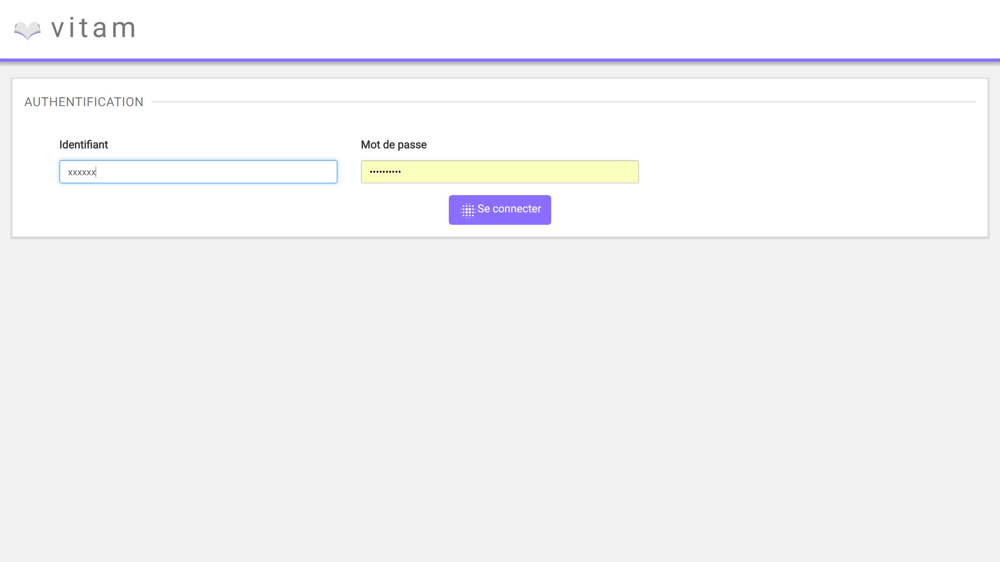
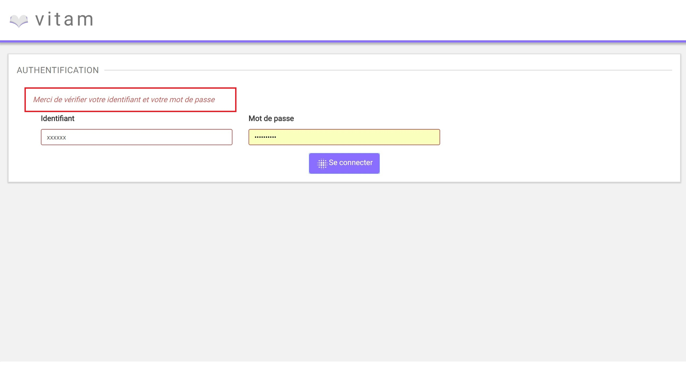
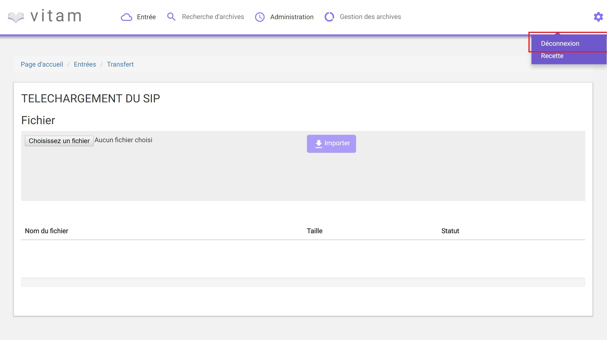

Authentification¶
Cette partie est destinée à expliquer les fonctionnalités du système d’authentification qui s’affiche dès qu’un utilisateur souhaite se connecter à l’IHM minimale et du processus de déconnexion.
Le système comporte actuellement trois niveaux d’authentification :
- Administrateur
- Utilisateur
- Invité
Le portail d’authentification de l’IHM de démonstration est similaire à celle de l’IHM de recette.
Connexion¶
Pour s’identifier à l’IHM minimale Vitam, l’utilisateur doit saisir son identifiant et son mot de passe dans les champs du même nom. Pour des mesures de sécurité, le mot de passe saisi ne s’affichera pas en toutes lettres.
Un clic sur le bouton “Se connecter” lance l’authentification.
Lorsque le couple Identifiant/Mot de passe n’est pas cohérent, c’est à dire :
- L’identifiant n’existe pas,
- Le mot de passe ne correspond pas à l’identifiant associé
Alors, un message d’erreur s’affiche à l’écran, demandant à l’utilisateur de vérifier son identifiant et son mot de passe. Aucune autre information n’est donnée pour des mesures de sécurité.
Par défaut, après connexion, la page “Transfert” d’un SIP est affichée.
Si l’utilisateur souhaite accéder à la plate-forme en saisissant une URL vers une page de Vitam, une fois l’authentification effectuée, il sera redirigé vers la page demandée. Si la session de l’utilisateur est expirée (la durée de la session en cas d’inactivité est d’une heure, non paramétrable par le métier), il devra s’authentifier de nouveau et accédera directement à la derniere page consultée.
Déconnexion¶
Depuis n’importe quelle page de Vitam, l’utilisateur a la possibilité de se déconnecter de l’application. Pour cela, il clique sur le bouton symbolisant une roue située en haut à droite de la page en cours, puis sur le sous menu “Déconnexion”. Le système clos la session de l’utilisateur, et la page d’authentification s’affiche de nouveau.
